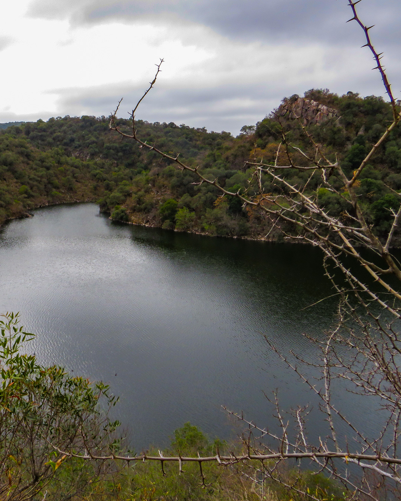

"Senderismo"
Ofrecemos distintos tipos de paseos adaptados a las necesidades e intereses del turista:
Travesía "El Pueblito - 2da Usina:"
signpost
Sendero sin indicaciones
signal_disconnected
Con red telefónica parcial
schedule
Duración: 4hs
warning
Requiere de Guía habilitado/a
swap_calls
Circuito lineal
monitor_heart
Dificultad baja - media
transfer_within_a_station
Distancia: 9km





Gruta San Martín de Porres - Río Ctalamochita 1er Balcón
Sendero de
Turismo Aventura
El turismo de aventura se suele asociar con una actividad física, el intercambio cultural, la interacción y la cercanía con la naturaleza. Esta experiencia puede implicar algún tipo de riesgo real o percibido y puede requerir un esfuerzo físico y/o mental.